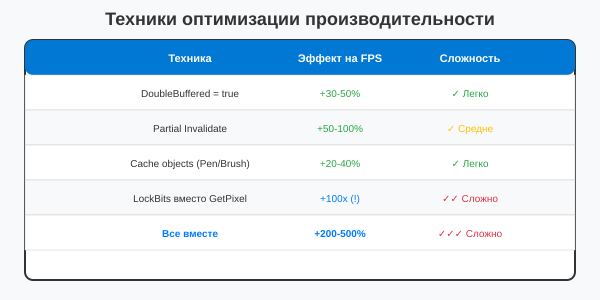

Урок 3.4: Практика: Оптимизация приложения
📌 Ключевые моменты этого урока:
- Профилирование показывает где именно теряется производительность
- Caching объектов (Pen, Brush) экономит память и время на переиспользование
- FPS счётчик помогает оценить результаты оптимизации (цель: 60+ FPS)
- Комбинация всех техник: DoubleBuffered + partial Invalidate + LockBits для максимума
- Оптимизация - это измерение, поиск узких мест, применение техник, повторное измерение
Анализ узких мест
Перед оптимизацией необходимо найти узкие места в коде:
- Используйте профилировщик Visual Studio (Debug → Performance Profiler)
- Измеряйте время выполнения критических участков Stopwatch
- Ищите частые вызовы Invalidate (выводятся в Debug)
- Проверяйте создание объектов в циклах (ГЛАВНЫЙ враг производительности!)
Применение техник оптимизации
1. Включите двойную буферизацию
this.DoubleBuffered = true;2. Используйте частичную перерисовку
this.Invalidate(updateRegion);3. Кэшируйте объекты (КЛЮЧЕВОЙ СОВЕТ!)
// Плохо: создание в цикле
for (int i = 0; i < 1000; i++)
{
Pen pen = new Pen(Color.Black);
g.DrawLine(pen, ...);
}
// Хорошо: переиспользование
Pen pen = new Pen(Color.Black);
for (int i = 0; i < 1000; i++)
{
g.DrawLine(pen, ...);
}Измерение FPS (правильный способ с Stopwatch)
// В конструкторе формы
private System.Diagnostics.Stopwatch fpsStopwatch = new System.Diagnostics.Stopwatch();
private int frameCount = 0;
private double currentFps = 0;
// Инициализация
public Form1()
{
InitializeComponent();
fpsStopwatch.Start();
}
// В Paint событии (вызывается для каждого кадра)
private void Form1_Paint(object sender, PaintEventArgs e)
{
// Ваш код рисования здесь
e.Graphics.DrawString($"FPS: {currentFps:F1}", Font, Brushes.Black, 10, 10);
// Счёт кадров
frameCount++;
// Каждую секунду обновляем FPS
if (fpsStopwatch.ElapsedMilliseconds >= 1000)
{
currentFps = frameCount * 1000.0 / fpsStopwatch.ElapsedMilliseconds;
frameCount = 0;
fpsStopwatch.Restart();
}
}
// Более простой способ с Timer:
private System.Windows.Forms.Timer gameTimer = new System.Windows.Forms.Timer();
private int frameCount = 0;
private DateTime lastSecond = DateTime.Now;
// В конструкторе
gameTimer.Interval = 16; // ~60 FPS (1000ms / 60 ≈ 16ms)
gameTimer.Tick += (s, e) =>
{
frameCount++;
if ((DateTime.Now - lastSecond).TotalSeconds >= 1)
{
this.Text = $"FPS: {frameCount}";
frameCount = 0;
lastSecond = DateTime.Now;
}
this.Invalidate();
};
gameTimer.Start();Таблица сравнения техник оптимизации

Сравнение эффективности техник оптимизации
Сравнение до и после оптимизации
Создайте версию приложения без оптимизаций и с оптимизациями. Сравните:
- FPS (кадров в секунду)
- Использование CPU
- Плавность анимации
- Отсутствие мерцания
Практическое задание
Задание: Оптимизация приложения
- Создайте приложение с множеством объектов (100+)
- Примените все изученные техники оптимизации
- Добавьте измерение FPS
- Достигните стабильных 60 FPS
Проверка знаний
Ответьте на вопросы, чтобы проверить, насколько хорошо вы усвоили материал:
1. Усвоили ли вы основные концепции урока?
2. Готовы ли вы применить изученное на практике?
3. Что такое FPS?